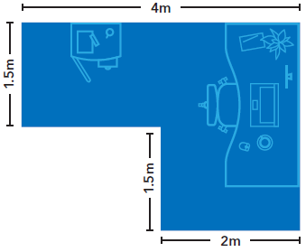

Espace de travail à domicile - Dépenses d’emploi
Déterminez votre utilisation de l'espace de travail
Sur cette page
Temporary flat rate method
If you are using Temporary flat rate method , you do not need to determine the size of your work space to calculate your claim for home office expenses in 2020.
To determine if you are eligible, refer to: Eligibility critera - Temporary flat rate method
Detailed method
If you are claiming the actual amounts you paid, you use the Detailed method . You will need to determine the size and use (employment and personal) of your work space to calculate your claim for work-space-in-the-home expenses.
To determine if you are eligible, refer to: Eligibility critera - Detailed method
Size of your home and work space
- Size of your home
-
All finished areas within the home count towards the size of the home. This includes:
- hallways
- bathrooms
- kitchen
You can measure in square metres or square feet.
- Size of your work space
-
The size of the space you work in must be reasonable.
You can measure in square metres or square feet.
The formula to calculate a rectangle or square is:
Length times WidthFor example:
- 4 m (length of room)
- times 3 m (width of room)
- equals 12 m2 (total size of room)
To calculate an irregular-shaped room, break down the dimenions into rectangles and added them up.
For example:
- 4 m (length of 1st area)
- times 1.5 m (width of 1st area)
- equals 6 m2 (size of 1st area)
- 2 m (length of 2nd area)
- times 1.5 m (width of 2nd area)
- equals 3 m2 (size of 2nd area)
- 6 m2 (size of 1st area)
- plus 3 m2 (size of 2nd area)
- equals 9 m2 (total size of room)
If you have an open concept design, you would use a reasonable percentage of the open space as your work space. You cannot use the entire floor space as your work space.
For example:
- 4 m (length of dining area)
- times 3 m (width of dining area)
- equals 12 m2 (total size of dining area)
{kind=link}
{kind=link}
{kind=link}
Determine the percentage of your home that you use as a work space
To determine the percentage of your home that you use as a work space, use this formula:
Size of work space divided by Size of home times 100 equals your work space as a % of your home
Example: Basic calculation
- 40 m2 (size of work space)
- divided by 400 m2 (size of home)
- times 100 (to convert it into a percentage)
- equals 10% (percentage of home used as a work space)
The calculator will perform this calculation for you.
Types of work spaces
There are two types of work spaces:
- common (shared) area
- designated room
Common (shared) area: Option 1 of 2
A common area is a space that has other purposes besides your work (for example, working at a kitchen table or using the family computer room).
Designated room: Option 2 of 2
A designated room is used only for your work (for example, a home office).
Hours per week you use the space for work
The number of hours you use the space for work can affect the amount of expenses you can claim, and depends on the type of your work space: a common (shared) area or designated room.
Common (shared) area: Option 1 of 2
Your claim is based on your employment use of the space and is determined using the number of hours the space is used for work. For example, if you work 40 hours a week at the kitchen table:
- 40 hours (hours worked)
- divided by 168 hours (total hours in a week)
- times 100 (to convert into a percentage)
- equals 23.8% (percentage of time you can claim for the work space)
Designated room: Option 2 of 2
Your claim is not affected by the number of hours you use the space for work. For example, if you work 40 hours a week in your dedicated room:
- 40 hours (hours worked)
- equals 100% (percentage of time you can claim for the work space)
Example: Dining room table is the work space
Due to the COVID-19 pandemic, Sam has been working from home using her dining room table. The dining room is 12% of the total square footage of her house and she uses it for work for 40 hours out of a total 168 hours in the week.
Since the dining room is not used only for work, Sam will need to calculate the employment use of that work space.
- 12% (size of work space compared to the entire finished area of the home)
- times 23.8% (40 hours worked per week divided by 168 hours in a week)
- times 100 (to convert into a percentage)
- equals 2.8% (percentage of home that is used as a work space)
If Sam paid $1,200 for rent, electricity, heat, and water for the period she worked at home because of COVID-19, the employment use portion is $1,200 x 2.8% = $33.60.
Example: Spare room is the work space
Chris lives alone in a 5-room house and has a designated area (spare room) where only Chris performs employment duties.
- 20 m2 (area of Chris' work space in his home)
- divided by 200 m2 (total finished area)
- times 100 (to convert into a percentage)
- equals 10% (percentage of home Chris uses for his work space)
If Chris paid $1,200 for electricity, heat, and water for the period they worked at home because of COVID-19, the employment use portion is $1,200 x 10% = $120.
The calculator will perform this calculation for you.
Number of workers in the home
One employee working in the home
If only one person in your home uses a work space, that person will claim the expenses.
Multiple employees working in the same home
Different work spaces
Each employee will calculate and claim the expenses separately.
Sharing the same common area work space
Each employee will calculate and claim the expenses separately.
Example: Multiple employees sharing a common area (shared) work space
Sam and Terry rent an 8-room house. Due to the COVID-19 pandemic, they have been working from home using their dining room table. They both meet all the eligibility criteria.
- 10 m2 (dining room area)
- divided by 120 m2 (total finished area of the house)
- times 100 (to convert into a percentage)
- equals 12% (percentage of home used for their work space)
Sam worked 40 hours a week and Terry worked 25 hours per week, both at the dining table.
For Sam
- 12% (percentage of home used for work space)
- times 23.8% (40 hours worked divided by 168 total hours in a week)
- times 100 (to convert into a percentage)
- equals 2.8%
Sam will claim 2.8% of the work space expenses, such as rent and electricity, paid for the eligible period.
For Terry
- 12% (percentage of home used for work space)
- times 14.9% (25 hours worked divided by 168 total hours in a week)
- times 100 (to convert into a percentage)
- equals 1.8%
Terry will claim 1.8% of the work space expenses, such as rent and electricity, paid for the eligible period.
Sharing a designated work space
Each employee can claim the part of the calculated amount that relates to their use of the room.
Example: Multiple employees sharing a designated work space
Nneka and Sergio both worked from home due to the COVID-19 pandemic and they shared a designated office in their home (office used only for work). The designated office space makes up 12% of the total finished area of their home. They both meet all the eligibility criteria.
- 10 m2 (office area)
- divided by 120 m2 (total finished area of the house)
- times 100 (to convert into a percentage)
- equals 12% (percentage of home used for their work space)
Nneka worked 40 hours a week and Sergio worked 30 hours per week.
For Nneka
- 12% (percentage of home used for work space)
- times 57% (Nneka's 40 hours out of the combined 70 hours total - 40/70)
- times 100 (to convert into a percentage)
- equals 6.8%
Of the work space expenses that can be claimed, Nneka will claim 6.8% of them.
For Sergio
- 12% (percentage of home used for work space)
- times 43% (Sergio's 30 hours out of the combined 70 hours total - 30/70)
- times 100 (to convert into a percentage)
- equals 5.2%
Of the work space expenses that can be claimed, Sergio will claim 5.2% of them.
For example:
- If Nneka paid $1,200 for rent, electricity, heat, and water for the period Nneka worked at home because of COVID-19, the employment use portion is $1,200 x 6.8% = $81.60.
- If Sergio paid $1,200 for rent, electricity, heat and water for the period Sergio worked at home because of COVID-19, the employment portion is $1,200 X 5.2% = $62.40.